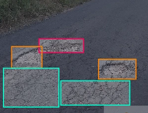
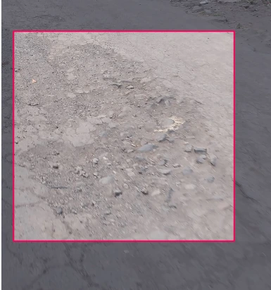

Portfolio Details


Welcome to the Indonesian Road Damage Detection App
An AI-powered application designed to detect and classify road damage in Indonesia. Leveraging the YOLOv5s model, the system accurately identifies 4 distinct types of distress: potholes, alligator cracking, corrugation, and raveling to optimize infrastructure maintenance.
This project focuses on developing a road damage image detection system in Indonesia that classifies 4 main types of distress: potholes, alligator cracking, rutting/corrugation (wave), and raveling. The main challenges in field object detection are the limited availability of computing power (low-resource devices) and variations in environmental conditions (weather, lighting, and camera quality). To address these challenges, this project applies a lightweight model-based architectural modification approach optimized through advanced data augmentation techniques.
Why Use YOLOv5s?
The selection of the YOLOv5s (Small) architecture is based on a well-considered trade-off between performance and efficiency:
• Advantages: This model is highly lightweight, simple, and offers high inference speeds, making it ideal for deployment on devices with limited specifications (such as smartphones or embedded systems)..
• Limitations: Due to its small size, the standard YOLOv5s has limited feature capacity, making it prone to performance drops in accuracy when faced with complex or sub-optimal road imagery.
Dataset Management & Distribution
he model was trained using an image dataset collected independently directly from the field to ensure alignment with the characteristics of Indonesian roads. A total of 492 images were collected and strictly partitioned with the following proportions:
• Training Dataset: 353 images — used to train the model's feature recognition aspects.
• Validation Dataset: 80 images — used to monitor performance during the training process and prevent overfitting..
• Testing Dataset: 59 images — used as blind test data to evaluate the final performance of the mode
Data Details per Class
The total number of object annotations amounts to 1,089 instances, divided into four categories of road damage. After applying specialized augmentation techniques to the Jalan_Retak_Buaya (Alligator Cracking) class, the distribution is as follows:
• Jalan_Retak_Buaya (Alligator Cracking): This class has the highest count, with 325 instances after the augmentation process was completed.
• Jalan_Bergelombang (Rutting/Corrugation): This class ranks second with a total of 321 instances..
• Jalan_Raveling (Raveling): This asphalt aggregate raveling damage class recorded 297 instances.
• Jalan_Berlubang (Potholes): This class has the lowest count compared to the others, with 146 instances..
Detecting these four types of road damage automatically through digital imagery carries its own complexities due to the visual characteristics of asphalt surfaces and dynamic field environment conditions, including:
1. Visual Texture Similarity (Inter-Class Similarity): Rough patterns in the Raveling class, advanced Alligator Cracking, and shallow Potholes look highly similar in 2D images, frequently triggering misclassifications.
2. Limited Depth Information: Standard cameras do not capture surface elevation contours, making Rutting/Corrugation damage difficult to identify without the aid of shadows or lane marking distortions.
3. Lighting and Weather Interference: Shadows from trees or vehicles are often misinterpreted as Potholes, while wet asphalt surfaces reflect light and mask the texture of Raveling.
4. Overlapping Damage: Multiple types of damage frequently co-occur in a single location—such as a pothole forming within an alligator cracking area—making it difficult to determine precise object boundaries (bounding boxes).
5. Data Imbalance (Class Imbalance): Significant discrepancies in sample sizes—both in classes with a minimum dataset (such as Potholes) and those with case-specific characteristics (such as Alligator Cracking)—potentially lower the model's detection sensitivity on minority classes.
Limitations: Due to its small size, the standard YOLOv5s has limited feature capacity, making it prone to performance drops in accuracy when faced with complex or sub-optimal road imagery
To surpass the baseline performance of YOLOv5s without increasing the model's computational load, the author modified the data pipeline. Instead of expanding the model architecture, the optimization focused on enriching data variation using a combination of the following augmentation techniques:
• Geometry & Spatial: Horizontal Flip and Mosaic Augmentation (a built-in YOLOv5 feature to enrich the context of small objects).
• Lighting & Contrast: Random Brightness Contrast, Hue Saturation Value (HSV), and CLAHE (Contrast Limited Adaptive Histogram Equalization) to address shadows and scorching weather conditions.
• Image Quality & Environmental Disturbance: Sharpen, Gaussian Noise, Motion Blur (simulating camera movement), MedianBlur, ToGray, and Image Compression to simulate real-world camera degradation in the field. This experiment proves that a simple model, when equipped with the right augmentation strategy, can perform more optimally, robustly, and adaptively in real-world scenarios.
To address the limited amount of data in the alligator cracking class, which consists of only 94 images, while simultaneously balancing the inter-class proportions (class balancing), the researcher applied data augmentation techniques using the Albumentations library. This augmentation process focused on two main aspects:• Geometric Transformation: Applying HorizontalFlip (p=0.5), VerticalFlip (p=0.5), RandomRotate90 (p=0.5), and ShiftScaleRotate (10% shift, 15% scale, maximum 15° rotation, with border reflect). This technique is safe to use because asphalt crack textures are invariant to changes in orientation.
• Color Adjustment: Applying ToGray (p=0.2) to train the model to focus more on the crack texture patterns rather than the color variations of the asphalt surface.
The combination of these methods aims to enrich the visual variation of the dataset, enabling the model to generalize more accurately.
Key Features
- Real-time Data Visualization
- User Role Management
- Secure Authentication
- Customizable Dashboards
- Data Export Options
- Multi-device Support